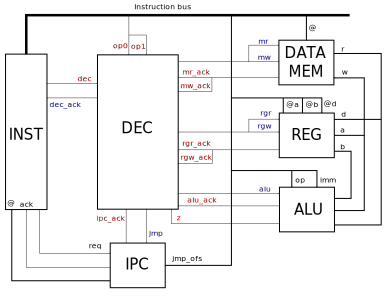
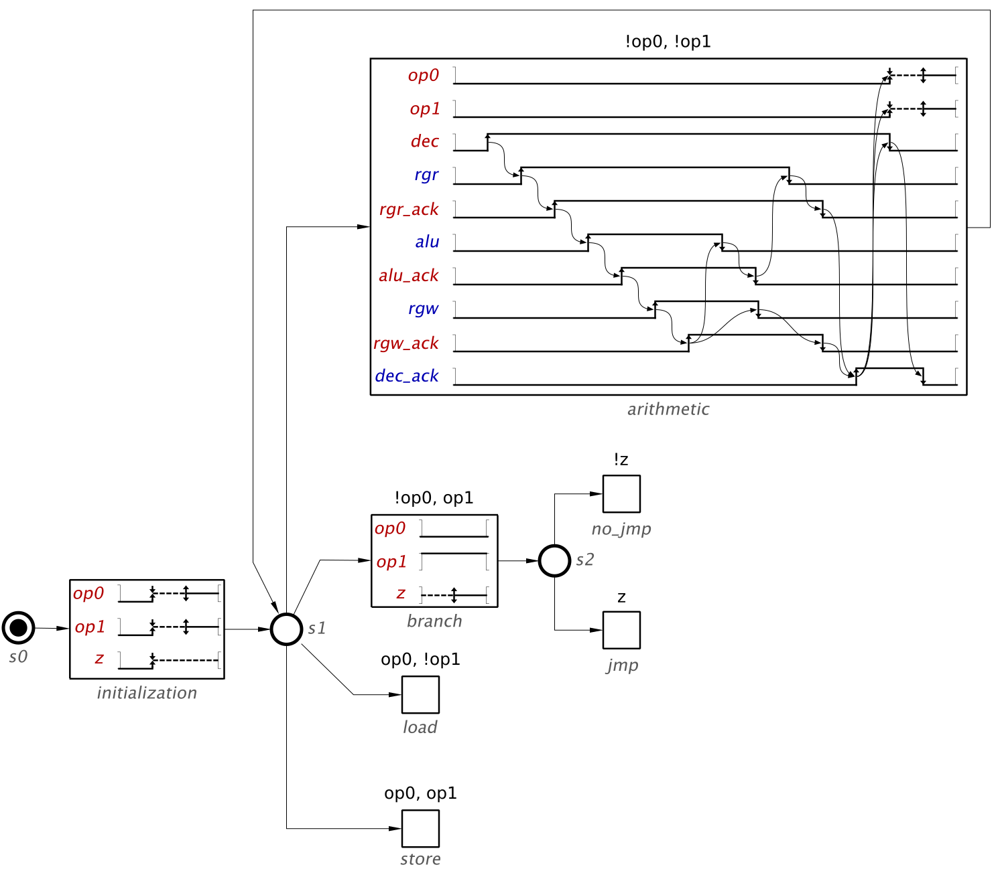
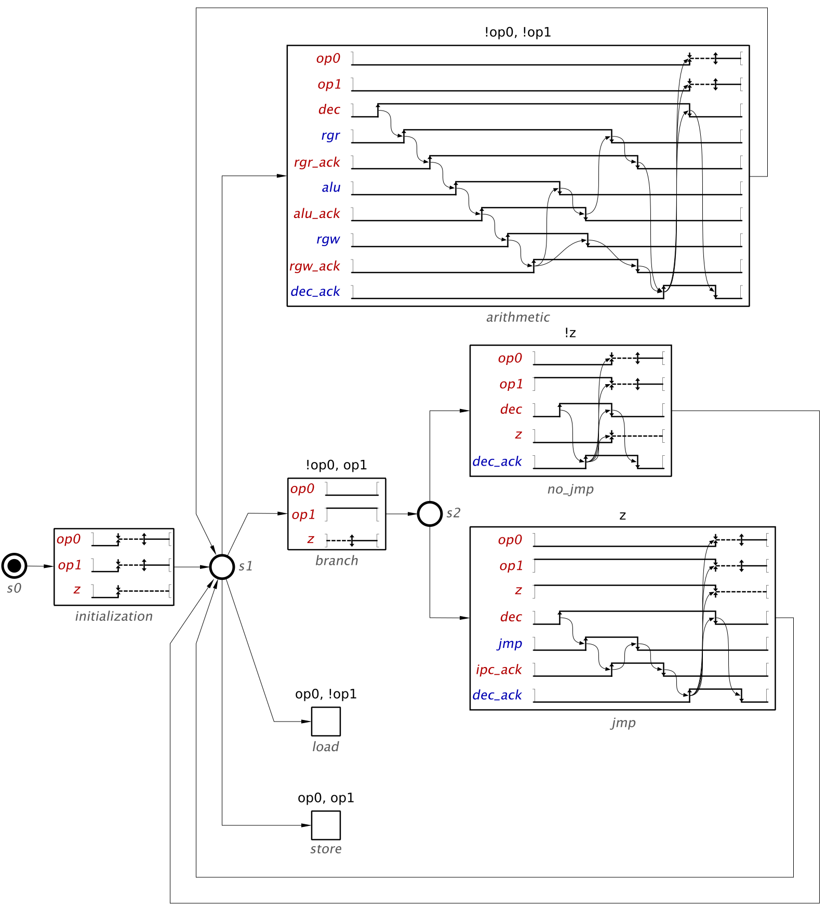
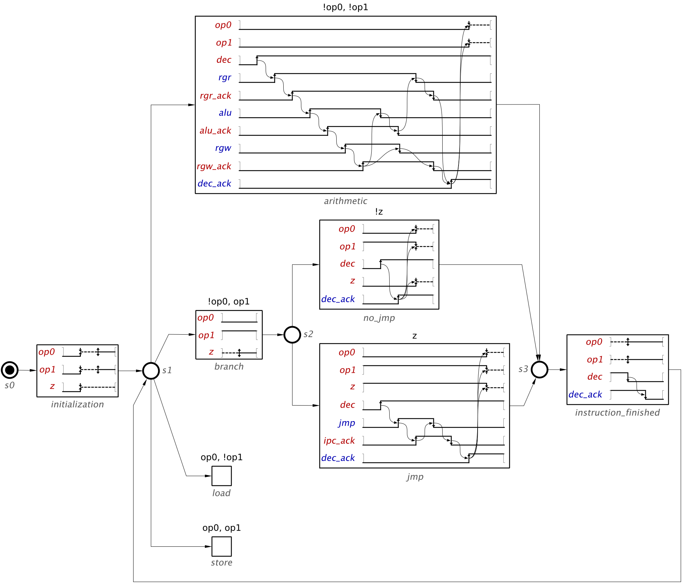

Instruction decoder and controller
An Instruction Decoder is a circuit that processors implement in order to interpret instructions coming from memory. In synchronous designs, this circuit feeds the appropriate operands into the datapath of the processor, according to the instruction. Additionally, it must communicate with a Controller, whose role is to direct the flow of the execution at every stage of the pipeline.
In this exercise we are interested in implementing the instruction decoder and controller for a small asynchronous processor. While these are often different circuits, in this case the simplicity of the processor allows us to incorporate all the functionality into a single module. From now on, in this exercise, we will refer to this combined module simply as Decoder.
The following figure shows a block diagram of the relevant processor modules.

The diagram contains 6 blocks. Your task is to implement the block labelled as DEC. All the input and output signals for DEC are colored in red and blue, respectively. Signals in black do not interact with DEC and are shown only to provide context.
The different modules operate in the following way:
The instruction controller INST loads an instruction from memory and sets it into the instruction bus. When the bus is stabilised, it initiates a decoding request by firing the signal dec. After the instruction has been executed, as indicated by the dec_ack signal, this module requests a new address from the IPC module and loads it from memory.
The data memory DATA MEM has an address port @ obtained directly from the instruction bus. It supports two types of operations, read and write, that are requested with the signals mr and mw, respectively. After a read operation is finished, DATA MEM will set the memory value from the address in @ into the read port r and enable mr_ack. Write operations are similarly handled with the signals mw and mw_ack. In this case, the data to write must be stable before mw is enabled.
The register block REG contains a small number of registers that can store values to perform arithmetic operations. It contains two read ports, a and b, and one write port d. Like in the case of DATA MEM, the port addresses are obtained directly from the instruction bus. The signals rgr and rgw are used to request read and write operations, respectively. The signals rgr_ack and rgw_ack acknowledge these operations in the same way as in the DATA MEM module.
The ALU module performs arithmetic operations. It decides what operation to execute according to the op port that comes from the instruction bus. It has three ports for its operands: imm, a and b. The first port allows the ALU to obtain values directly from the instruction bus, while a and b must be read from the register. The signal alu informs the ALU that the operands are set and an operation can take place. The result of this operation is placed in the output port d. After an operation is complete, the signal alu_ack is enabled. Furthermore, a signal z is enabled if the result of the operation was zero. This value is guaranteed to remain stable until after the following operation is requested.
The IPC module stands for Instruction Process Counter, and its role is to keep track of the address for the instruction memory. In general, it keeps a copy of the last address loaded and increases it by one when the instruction controller requests a new address. It is also possible to request the module to add an offset different than one to the next address by enabling the signal jmp. The offset is obtained from the port imp_ofs directly from the instruction bus.
The processor implements four instructions that must be decoded and controlled by DEC:
Arithmetic operation. Performs an arithmetic operation and stores the result in the register. Corresponds to the code op0 = 0, op1 = 0.
Branch operation. If the result of the last arithmetic operation is a 0, adds an offset into the next instruction address. Corresponds to the code op0 = 0, op1 = 1.
Load from memory. Reads from memory and stores the value into the register. Corresponds to the code op0 = 1, op1 = 0.
Store in memory. Stores a value from the register into memory. Corresponds to the code op0 = 1, op1 = 1.
Exercise 1: Arithmetic Instructions
The first instruction you have to implement is the arithmetic instruction. But before that, it is always a good idea with WTG to first set the basic structure of the controller. This not only makes it easier to approach the problem, but also allows Workcraft to infer signal values when possible.
Let us first define the initialization and leave a waveform for every instruction. Remember to rename every waveform with the instruction it intends to solve.
Detailed instructions
Place a state and double click on it to set it as initial.
Add a new waveform, rename it initialisation and add a connection from the initial state. A signal cannot be unstable in the first initial state. We will assume that, in the initialization of this circuit, the signals op0 and op1 are low before becoming unstable.
Click on the signal tool and hold Shift while clicking twice to add two input signals.
Rename them op0 and op1.
Double click on them while holding Shift and Ctrl to add a destabilise transition.
Double click on them again to add stabilise transitions.
Add a new state and four waveforms. Add a connection between initialisation and the state, and from the state to the new waveforms.
Rename each waveform with one of the instructions: arithmetic, branch, load and store.
Set a guard for each waveform depending on the operation it implements:
Click on the arithmetic waveform and set, in the guard field on the property editor, the guard !op0, !op1.
Click on the branch waveform and set, in the guard field on the property editor, the guard !op0, op1.
Click on the load waveform and set, in the guard field on the property editor, the guard op0, !op1.
Click on the store waveform and set, in the guard field on the property editor the guard, op0, op1.
The WTG should look similar to the following figure.

You can now implement the arithmetic instruction controller.
Detailed instructions
Double click on the arithmetic waveform to move to the waveform level.
Use the property editor to declare the signals op0 and op1 by clicking on their checkbox.
This instruction requires interactions with the modules INST, REG and ALU. Add all the signals used to interact with them:
Add the input signals dec, rgr_ack, rgw_ack and alu_ack. The signal z is not needed for this instruction and so it can be ignored.
Add the output signals dec_ack, rgr, rgw, alu.
Remember that signals can be reorganized by holding Shift while dragging them vertically.
The signal dec indicates the start of this scenario. First, the operands must be loaded from the register into the ALU:
When the register is done loading the values in its output ports, it will rise the rgr_ack signal. We can then request ALU to perform the operation.
Add rise transitions to the signals rgr_ack and alu.
Connect the transition of rgr to the transition of rgr_ack, and the transition from rgr_ack to the transition of alu.
The ALU will rise the signal alu_ack after the operation is performed. The register can then be requested to write the result.
Add new rise transitions for signals alu_ack and rgw.
Connect the transition of alu to the transition of alu_ack.
Connect the transition of alu_ack to the transition of rgw.
After the register has finished storing the result of the operation, the ALU can stop holding the value and drop the request to write in the register. This can be done in parallel.
Connect the transition from rgw to a new transition for signal rgw_ack.
Add fall transitions for signals rgw and alu.
Connect the transition for signal rgw_ack to the fall transitions of rgw and alu.
When the ALU acknowledges the end of the operation, we can drop the request to read from the register.
Add a fall transition for signals alu_ack and rgr.
Connect the fall transition of signal alu to the fall transition of alu_ack, and the fall transition of alu_ack to the fall transition of rgr.
After the register acknowledges the end of the read and write operations, the decoder informs that the operation has been finished.
Add a fall transition for signals rgr_ack and rgw_ack and a rise transition for signal dec_ack.
Connect the fall transition of rgr to the fall transition of rgr_ack.
Connect the fall transition of rgw to the fall transition of rgw_ack.
Connect the fall transition of rgr_ack and rgw_ack to the rise transition of dec_ack.
Since the operation is finished, the signals op0 and op1 might change value and so they should be considered unstable. In parallel, dec acknowledges the finalization of the operation.
Add destabilise transitions to signals op0 and op1.
Add a fall transition to signal dec.
Connect the rise transition from signal dec_ack to the transitions you just added.
Add a fall transition for signal dec_ack.
Connect the fall transition of signal dec to the fall transition of dec_ack.
At some point before the end of the waveform, the signals op0 and op1 must become stable.
The instruction is now complete and the decoder waits for the next instruction.
The implementation for the first signal can be seen in the next figure.

Exercise 2: Branch Instructions
The next instruction we will implement is the branching instruction. This instruction allows the processor to alter the execution flow depending on logic conditions. Any operation performed in the ALU will set the signal z to high if the result was zero. It will set low otherwise. By using this signal we can determine whether to branch or not.
This instruction will need to use guards. Implement structure of the WTG for the branch instruction and the common waveform before the guard. Keep in mind that z has to be initialized in a similar way to op0 and op1. The value of this signal is only relevant to the branch operation, so it should remain unstable in every waveform and become stable when we need it.
Detailed instructions
The signal z is unstable in most waveforms, but it first needs to be initialised with a known value.
A waveform with a guard must always declare the signals that are guarded.
The signal z is necessary to determine whether branching occurs. This signal must become stable before taking a decision.
The model must now decide what to do depending on the value of z.
Go to the state level by double clicking outside of the waveform.
Place a new state and a connection between branch and the state.
Place two new waveforms and rename them no_jmp and jmp.
Add a connection from the new state to the new waveforms.
Click on no_jmp and, in the property editor, set the Guard field to !z.
Click on jmp and, in the property editor, set the Guard field to z.
The resulting WTG can be seen in the following figure.

The simplest scenario occurs when z is low. In this case, there is nothing to do and DEC immediately acknowledges the instruction after the decoding request. Implement the waveform for this scenario.
Detailed instructions
Declare the signals that are needed to process this scenario.
In the property editor, use the declare button for the signals z, dec, op0, op1 and dec_ack.
The first transition must be the request for the operation. This is immediately acknowledged in this scenario, since there is nothing to be done.
Signals z, op0 and op1 are no longer needed and can become unstable.
Add an unstable transition to signals z, op0 and op1.
Connect the transition from dec_ack to the transitions of z, op0 and op1.
Add a stabilise transition to signals op0 and op1.
Finally, the request for decoding and the acknowledge can be set to low.
Add a fall transition for signal dec.
Connect the rise transition of dec_ack to the fall transition of dec.
Add a fall transition for signal dec_ack.
Connect the fall transition of signal dec to the fall transition of signal dec_ack.
The model returns to its waiting state until a new request arrives.
You can see the implementation of no_jmp in the following figure.

Finally, implement the last waveform for the branch instruction.
Detailed instructions
Declare the signals that are needed to process this scenario.
In the property editor, use the declare button for the signals z, dec, op0, op1 and dec_ack.
Use the signal tool to declare jmp and ipc_ack.
The first transition must be the request for the operation. This follows with a request to the IPC to branch the address.
When the transaction with IPC is over, DEC signals the end of the instruction.
Add a rise transition to signal ipc_ack.
Connect the transition of jmp to the transition of ipc_ack.
Add fall transitions to signals jmp and ipc_ack.
Connect the rise transition of ipc_ack to the fall transition of jmp and the fall transition of jmp to the fall transition of ipc_ack.
Add a rise transition to signal dec_ack.
Connect the fall transition of ipc_ack to the rise transition of dec_ack.
Proceed like in the no_jmp waveform to finish this waveform.
Add an unstable transition to signals z, op0 and op1.
Add a stabilise transition to signals op0 and op1.
Add a fall transition for signal dec.
Connect the transition from dec_ack to the transitions of z, op0, op1 and dec.
Add a fall transition for signal dec_ack.
Connect the fall transition of signal dec to the fall transition of signal dec_ack.
The model returns to its waiting state until a new request arrives.
The next figure shows a complete implementation of the branch instruction.

Exercise 3: Simplify the model
By looking at our current design, you can observe that the instructions always finish in the same way. This is due to the protocol between DEC and INST. In this exercise, your task is to identify the common parts and create a new waveform called instruction_finished that produces the necessary transitions between completing an instruction and waiting for the next.
Detailed instructions
Modify the structure to accommodate for a waveform after the instructions.
Remove the connections that go from the instruction waveforms to the nodal state.
Add a new nodal state and connect the waveforms arithmetic, no_jmp and jmp to it.
Add a new waveform and a connection from the previous nodal state to this new waveform. Rename the waveform instruction_finished.
Add a connection from instruction_finished to the nodal state preceding the instruction waveforms.
Remove the common transitions from the instruction waveforms.
Add the removed transitions to the instruction_finished waveform.
Double click on the instruction_finished waveform.
Declare the signals op0, op1, dec and dec_ack by using the declare option in the property panel.
Add a fall transition to dec and dec_ack.
Connect the transition of dec to the transition of dec_ack.
Add stabilise transitions to op0 and op1.
The simplified WTG can be seen in the next figure.

Exercise 4: Load and Store Instructions
The remaining instructions have to access the DATA MEM module for read and write operations. This module uses a similar handshake protocol to the REG module. Complete the DEC module by adding the Load and Store operations to the WTG.
This exercise intentionally lacks detailed instructions to encourage working on it independnetly. You can compare your solution to the complete WTG of the decoder: instruction_decoder.wtg.work (21 KiB)
Solutions